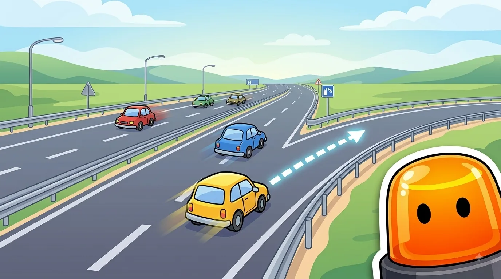
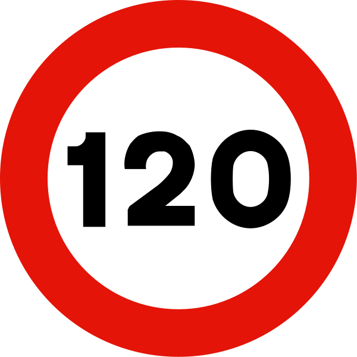
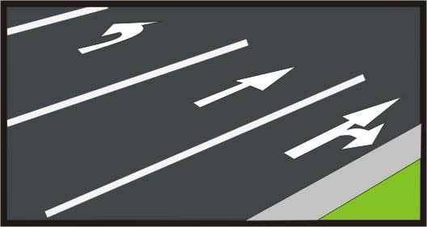
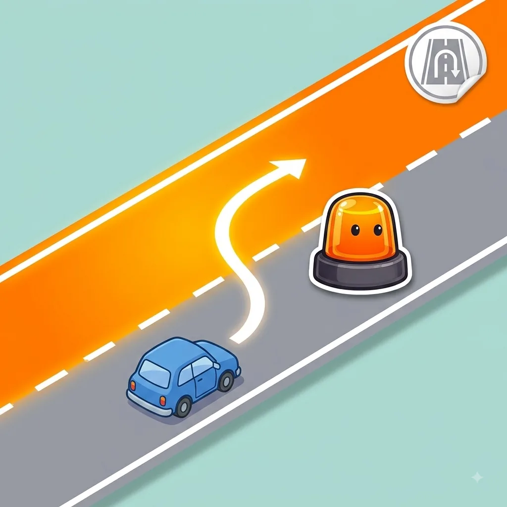

Autopistas y autovías
Incorporaciones, carriles y normas específicas de vías rápidas.
Esquema
Lo que te vas a encontrar circulando por autopista o autovía.


Autopistas y autovías no son para todo tipo de vehículos.

Autopista vs autovía: la diferencia real
Autopista (AP)
Nunca tiene cruces a nivel; accesos siempre por carril de aceleración/deceleración
Autovía (A)
Puede tener cruces a nivel y accesos más directos
| Autopista | Autovía | |
|---|---|---|
| ¿Cruces a nivel? | Nunca | Puede haberlos |
| Accesos y salidas | Siempre separados, con carril de aceleración/deceleración | Pueden ser a nivel, sin separación física |
| ¿Peaje? | Puede ser de pago o gratuita | Siempre gratuita |
| Se identifica como | AP + número | A + número |
Trucos para no olvidarlo
Adáptate antes de incorporarte, no después.
El carril de aceleración sirve para igualar tu velocidad a la del tráfico, no para colarte a la fuerza.
El carril izquierdo no es "el tuyo".
Se usa para adelantar y se abandona en cuanto puedas volver a tu carril, no para circular de forma permanente.
Autopista nunca cruza; autovía, a veces sí.
La autopista jamás tiene cruces a nivel y sus accesos van siempre por carril de aceleración o deceleración; la autovía puede tener cruces y accesos más directos.
Confusiones típicas

Ponte a prueba
Otros temas
Señales verticales
La forma y el color ya te dicen el mensaje antes de leer nada.
Velocidad y distancias de seguridad
A más velocidad, la frenada crece mucho más rápido que la reacción.
Señales horizontales y marcas viales
Líneas, flechas y símbolos pintados en el asfalto, con su propio código.
Normas generales de circulación
Las reglas base que deciden por ti cuando no hay ninguna señal.
Adelantamientos
Cuándo, cómo y dónde se puede adelantar con seguridad.
Intersecciones y prioridad de paso
Quién pasa primero en cruces y glorietas.
Alcohol, drogas y fatiga
Tasas máximas y por qué te la juegas más de lo que crees.
El vehículo: mantenimiento y elementos de seguridad
Lo mínimo que debes revisar antes de coger el coche.
Accidentes: actuación y primeros auxilios
Proteger, avisar y socorrer, en ese orden.
Sanciones y puntos del carnet
Cómo funciona el sistema de puntos y qué te los quita.
Casos especiales: ciclistas, peatones, animales y meteorología
Las situaciones que no siguen la norma "de manual".